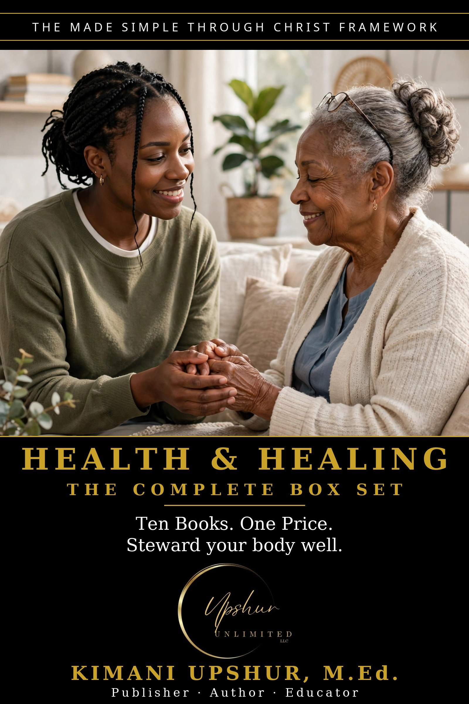

Made Simple: Health & Healing — The Complete Box Set
by Kimani Upshur, M.Ed.
Made Simple: Health & Healing — The Complete Box Set by Kimani Upshur, M.Ed. Ten bestselling Made Simple books. One unbeatable price. Ten books on the health challenges real families face — ADHD, thyroid, migraine, dementia, stroke, infertility, and first aid — in plain, practical English. IN THIS BOX SET: 1. ADHD Made Simple — Understand the ADHD brain — and thrive with it, not against it. 2. Thyroid Made Simple — The butterfly gland that runs your metabolism, explained plainly. 3. Migraine Made Simple — Know your triggers, tame the pain — a sufferer's plain-English guide. 4. Prostate Made Simple — What every man should know, without embarrassment or jargon. 5. Miscarriage Made Simple — Grief, healing, and hope after pregnancy loss. 6. Infertility Made Simple — The long road to parenthood — medical, emotional, and spiritual help. 7. First Aid Made Simple — Be the calm in the crisis — essential skills every home needs. 8. Dementia Made Simple — Love someone through forgetting — care for them and for you. 9. Cholesterol Made Simple — Numbers, myths, and what actually protects your heart. 10. Stroke Made Simple — Act F.A.S.T. — recognize it, respond, and recover well. Every Made Simple book is written from a Christian worldview: Scripture first, practical always — honoring the Father, following Jesus Christ as Lord and Savior, and walking in the power of the Holy Spirit. Buy the box set once, and build your library for less than the cost of the books individually.
- Publisher
- Upshur Unlimited, LLC
- Author
- Kimani Upshur, M.Ed.
- Format
- Ebook
- Language
- English